Before / After
“Before” is the preserved previous PACE refinement. “After” is the After Hours campaign in Volt. Use the controls to compare, then open any image at its original size.


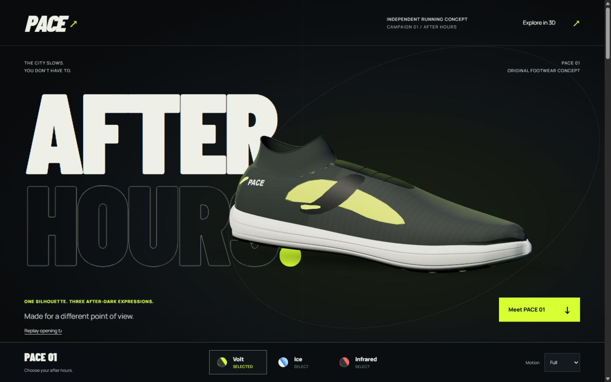


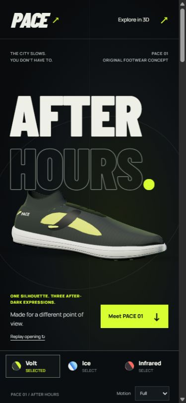
Desktop / Three expressions
One shared geometry, three material and light palettes. Current desktop captures use a tested 1440 × 900 browser viewport. The detail and exploration captures show the actual page, not an offline turntable.

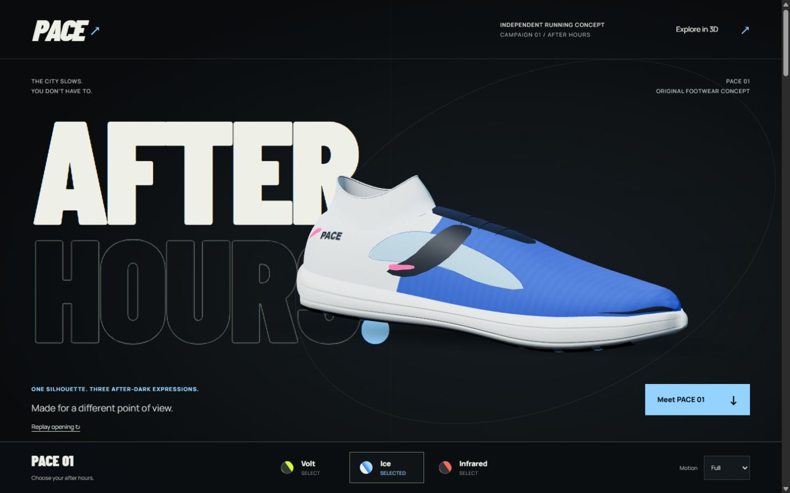

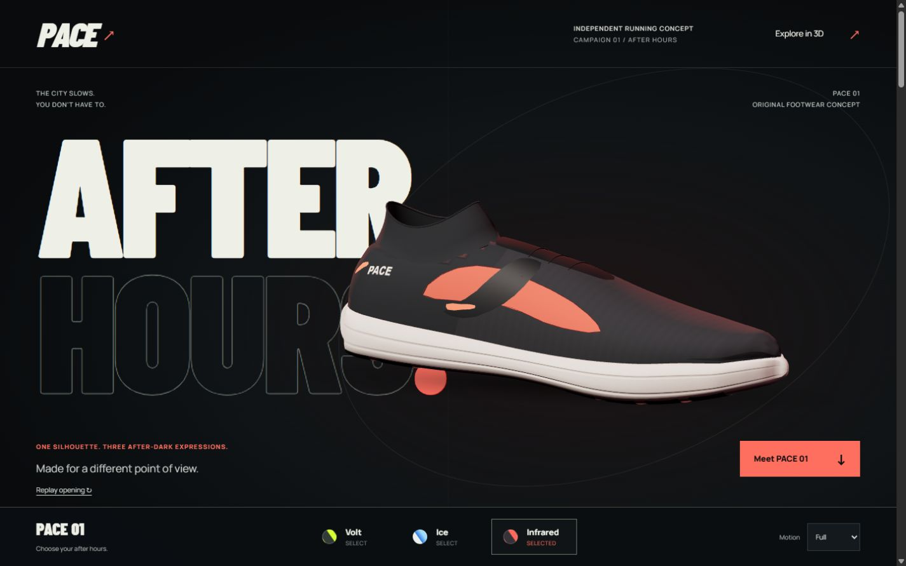

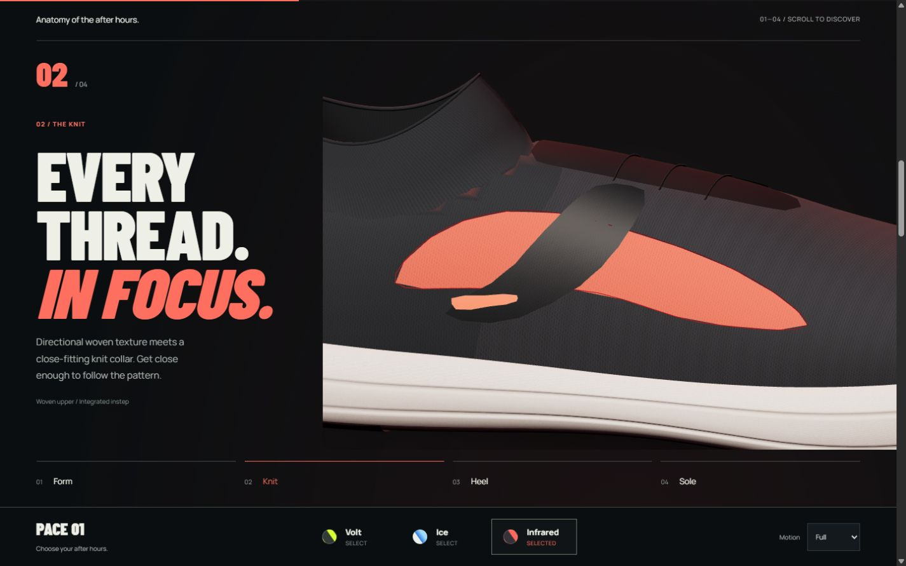

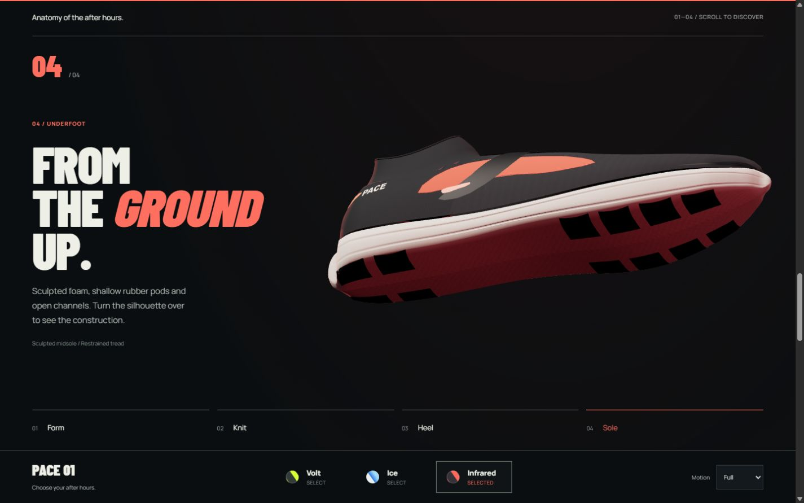

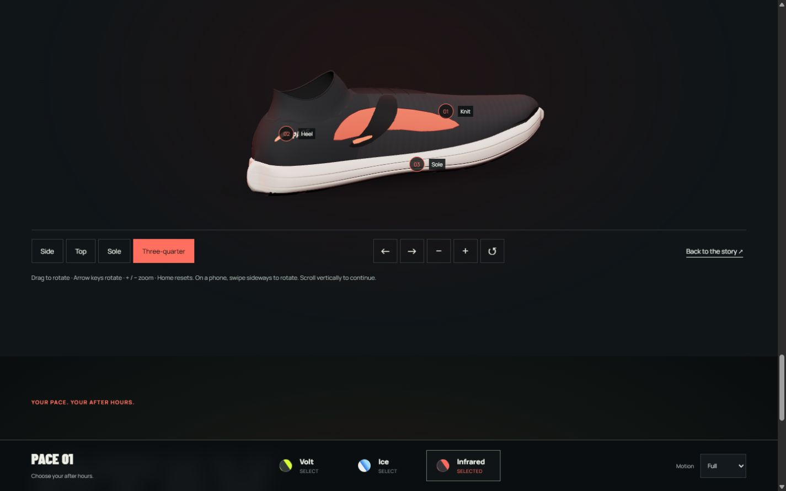

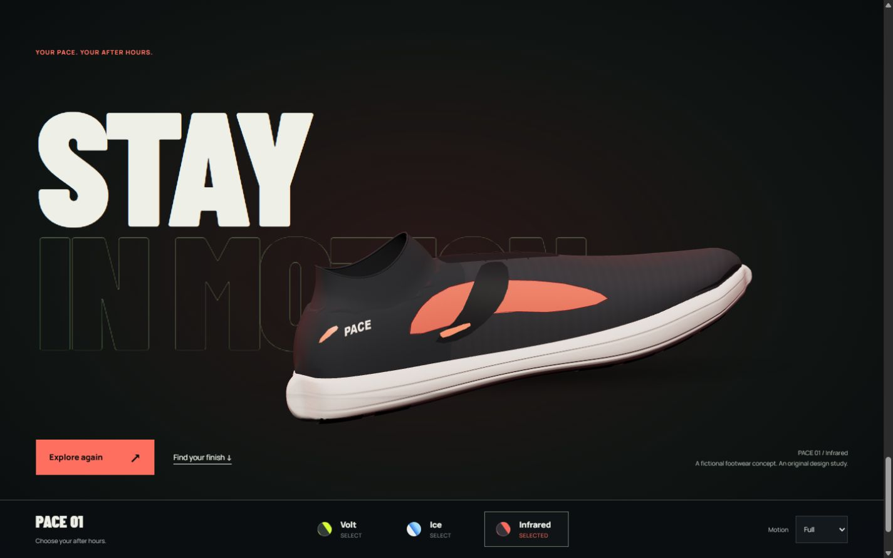
Phone / Composition and fallback
The tested phone viewport is 390 × 844; the short viewport is 360 × 640. These are browser viewports, not physical-device tests. Saved image dimensions differ from those viewport settings and are preserved in the original files. Short-height and fallback captures extend the review beyond the opening.

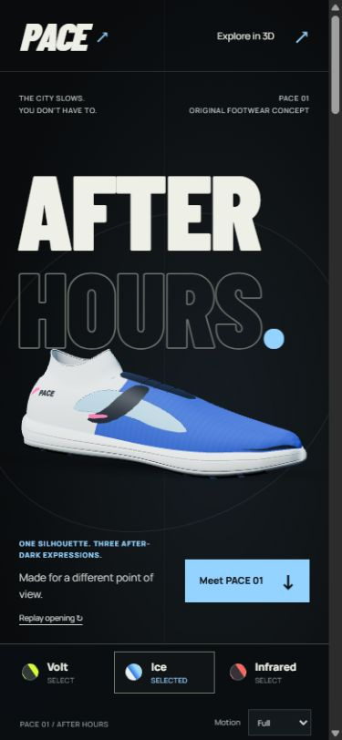

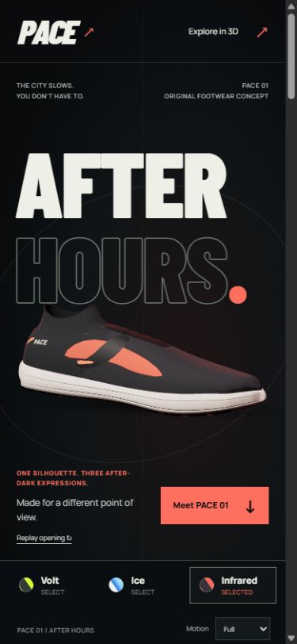

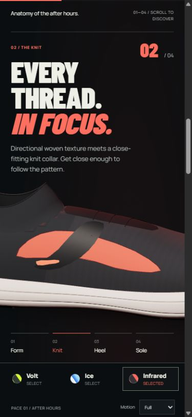

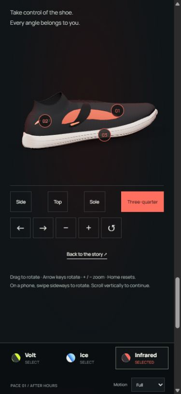

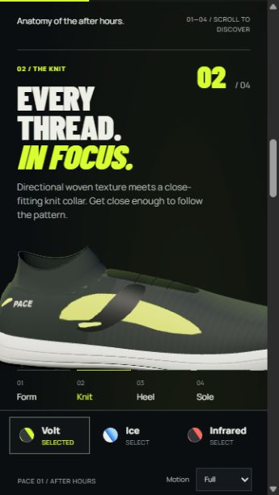

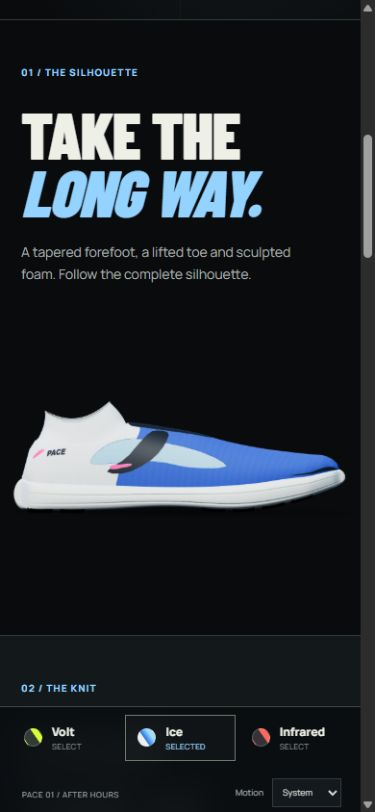
Live WebGL / Short encoded clip
Recorded from the actual campaign page. A 12-second wall-clock capture window yielded 2.01 seconds of encoded playback in this browser; the cause of that difference was not established. This captures only the WebGL canvas: HTML, background and controls are excluded. It is not an offline turntable, a full-page recording or proof of display FPS or presentation timing.
Open the WebM file · Read the measured browser results and their limits
Evidence, with its limits.
A still image establishes the displayed composition. It cannot establish smooth scrolling, input latency or frame rate. The live profiler separates browser scheduling from product-render submissions; idle gaps are expected when nothing changes.
- Current verification report and performance evidence — test coverage, measurements and remaining limits.
- Architecture and asset pipeline — camera ownership, interruption handling and fallback decisions.
- Reference inspection audit — what was actually seen and what remained unavailable.
- Historical previous-version timing sample — preserved for context, not a benchmark of this campaign.